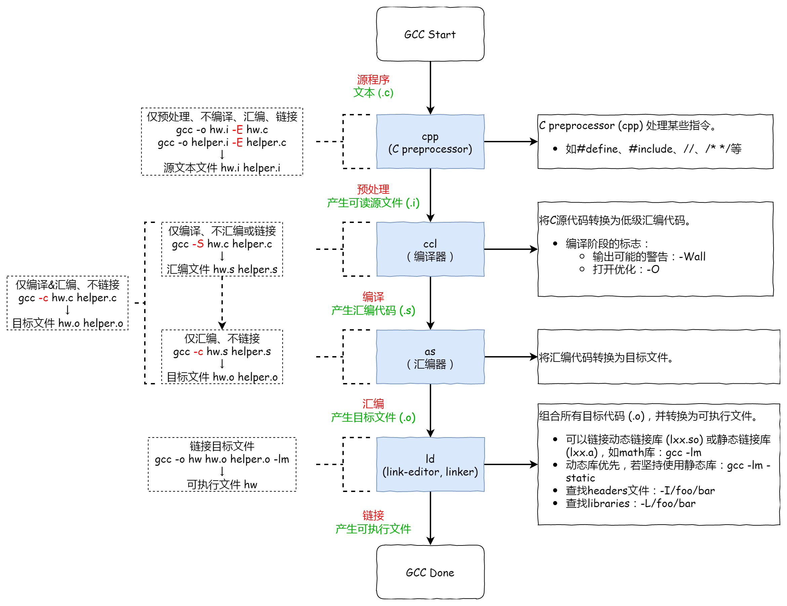

编译之 GCC 编译过程分解
GCC（GNU Compiler Collection）是一个开源的编程语言编译器集合，支持多种编程语言，包括 C、C++、Objective-C、Fortran、Ada 等。它是许多开发者和程序员首选的编译器，因为它的功能强大、稳定，并且跨平台。
这篇文章主要介绍 GCC (GNU Compiler Collection)，以及使用 GCC 编译 C 代码的分解过程。
C include
在 C 语言程序中，会引用各种 #include 头文件（.h），它是如何被引用的？
当我们 #include 头文件时，如 #include <stdio.h>，其实是告诉了 C 预处理器（C preprocessor, cpp）去指定路径 /usr/include/ 查找特定的头文件，并将其直接插入到代码中的 #include 位置。
GCC 编译分解
我么以下面的程序分解 GCC 编译的过程，文件名 hw.c。
1 | /* header files go up here */ |
GCC 并不是一个真正的编译器，而是一个称为「编译器驱动（compiler driver）」的程序，因此它协调了编译的许多步骤（一般为四到五步），如下图。
预处理
预处理指令：
1 | gcc -o hw.i -E hw.c |
预处理某些指令，如 #define、#include、注释，并将其 直接 插入到代码中。例如，下面的代码段是对 hw.c 进行预处理后产生的可读文件 hw.i。
1 | // 省略最前面的 N 行... |
编译
编译指令：
1 | gcc -o hw.s -S hw.c |
编译过后的文件称为汇编文件（代码）。
1 | .file "hw.c" |
chatGPT 这样说：
这段汇编代码是一个简单的 C 程序的汇编代码示例。下面是对代码中的一些关键部分的解释：
1 | .file "hw.c" |
这一行指定了源文件的名称。
1 | .section .rodata |
这里定义了一个只读数据段（.rodata），并在其中定义了一个字符串常量（hello, world）。
1 | .globl main |
这里定义了一个全局符号（main），表示这是程序的入口点。
1 | pushq %rbp |
这是函数开头的标准操作，用于保存和设置栈帧。
1 | leaq .LC0(%rip), %rax |
这里将字符串常量的地址加载到寄存器 rax 中，并将其作为参数传递给 puts 函数，以便在屏幕上打印出来。
1 | movl $0, %eax |
这些指令用于返回程序的退出码，并清理栈帧。
这些是这段汇编代码的主要部分。它基本上是将字符串”hello, world”打印到屏幕上，然后退出程序。
汇编
汇编指令：
1 | gcc -o hw.o -c hw.s |
汇编文件汇编后的文件类型是一个二进制文件，编译过程中生成目标文件，该目标文件打开是一个乱码。
链接
链接指令：
1 | gcc -o hw hw.o |
组合所有目标代码，并转换为可执行文件。使用 file hw 可查看关于可执行文件的描述。
1 | root@Standard-PC-i440FX-PIIX-1996:/home/xxx# file hw |
chatGPT 说，这是一个关于一个可执行文件的描述。让我来解释一下各个部分的含义：
ELF：代表可执行和可链接格式 (Executable and Linkable Format)，是一种用于执行文件和目标文件的标准文件格式。64-bit LSB：代表这是一个 64 位的可执行文件。pie：代表这是一个位置无关可执行文件 (Position Independent Executable)，这意味着它可以在内存中的任何位置加载并执行。x86-64：代表这是一个 x86-64 架构的可执行文件，也就是 64 位的 x86 架构。version 1 (SYSV)：代表这个可执行文件遵循 System V ABI 的第一个版本。dynamically linked：代表这个可执行文件是动态链接的，它依赖于其他共享库文件来运行。interpreter /lib64/ld-linux-x86-64.so.2：代表在运行该可执行文件时，系统将使用/lib64/ld-linux-x86-64.so.2这个动态链接器来加载和解释它。BuildID[sha1]=190...：代表这个可执行文件的构建标识符，它是通过计算文件内容的 SHA-1 哈希来生成的，可以用于唯一标识该文件。for GNU/Linux 3.2.0：代表这个可执行文件是为 GNU/Linux 操作系统的 3.2.0 版本编译的。not stripped：代表这个可执行文件没有被去除符号信息，也就是说，它保留了调试和符号表等信息，可以用于调试和分析。
GCC 参数总结
| 参数 | 解释 |
|---|---|
| -std=<standard> | 假设输入源文件符合 <standard>，如 c99。 |
| -E | 只预处理，不编译、汇编或链接。 |
| -S | 只编译，不汇编或链接。 |
| -c | 编译和汇编，但不链接。 |
| -o <file> | 将输出放入 <file> 中。 |
| -O<digit> | 打开优化，等级为 1~3，等级过高优化效果越好，但编译时间越长。 |
| -Wall | 给出更好的警告。 |
| -g | 启用 gdb 调试。 |
| -pie | 创建一个动态链接的位置无关可执行文件。 |
| -shared | 创建一个共享库。 |
多个文件一起编译
第一次生成可以使用以下命令，进行一起编译、链接，生成 hw 可执行文件。
1 | gcc -c hw.c helper.c |
后续如果修改部分文件的代码，则 仅对修改的源文件编译生成目标文件，最后一起对目标文件进行链接，更快（特别是大项目）。
1 | gcc -c hw.c # 修改过的文件 |
参考资料：
1：https://blog.csdn.net/weixin_39258979/article/details/101023337
2：Operating Systems: Three Easy Pieces
3：https://www.cnblogs.com/bobwuming/articles/14931042.html